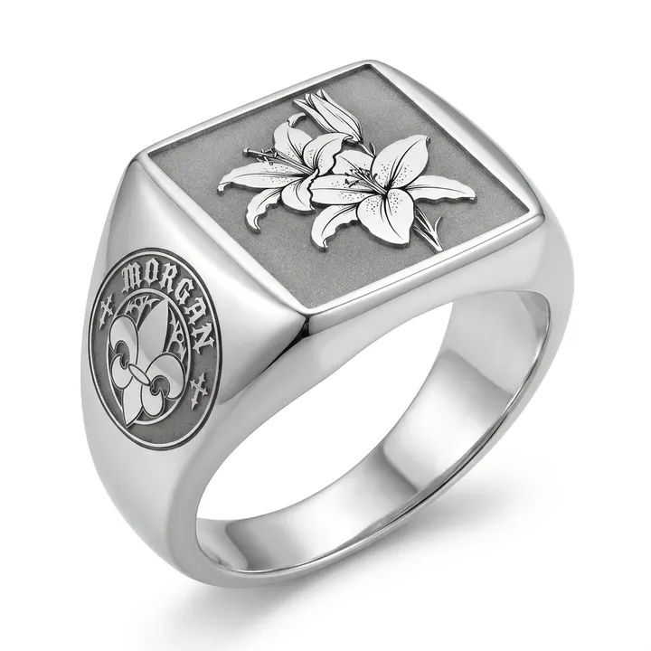
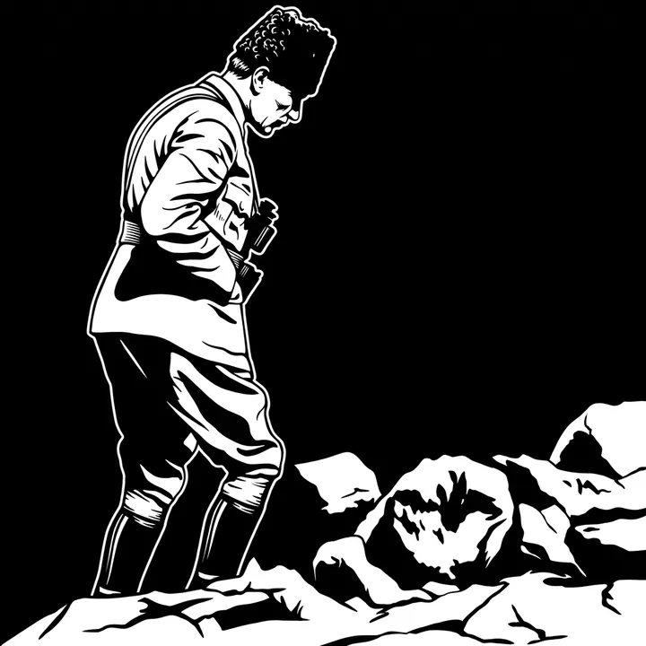
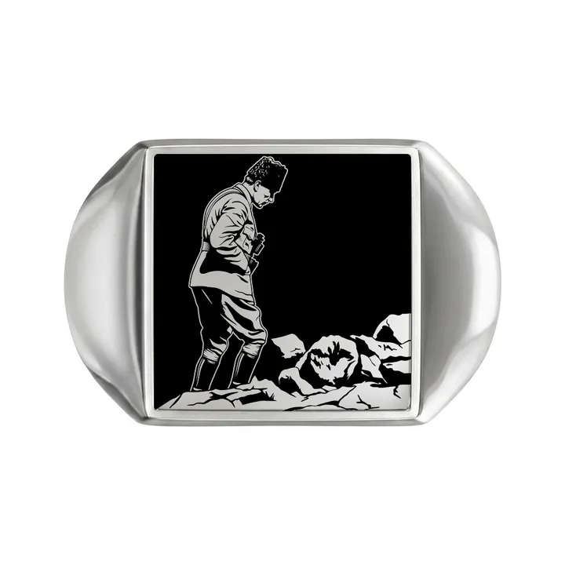
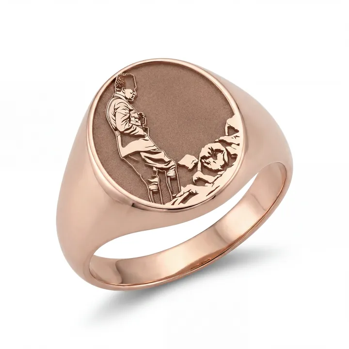
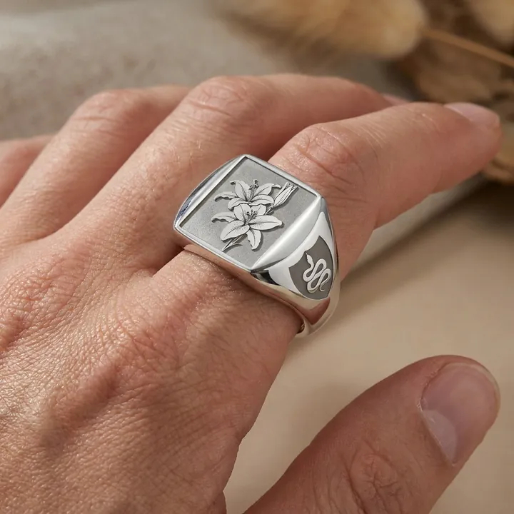
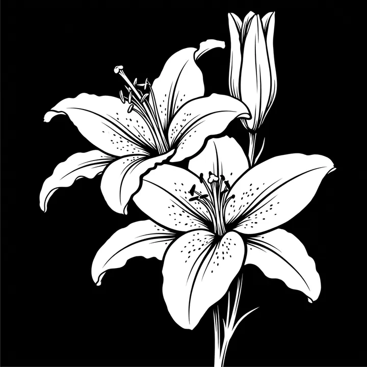
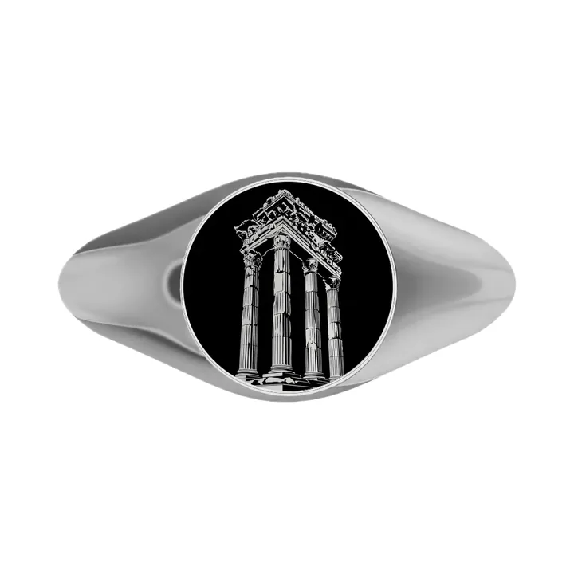
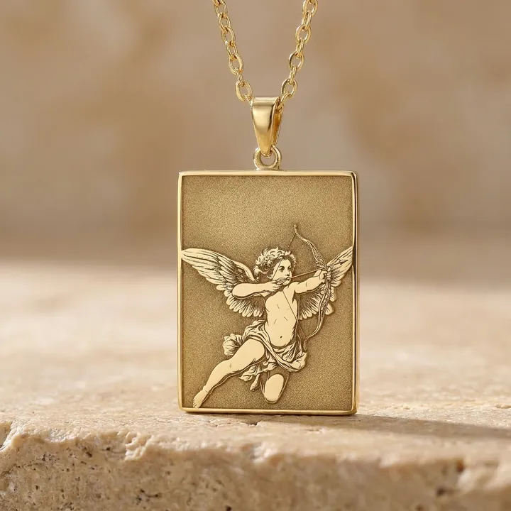
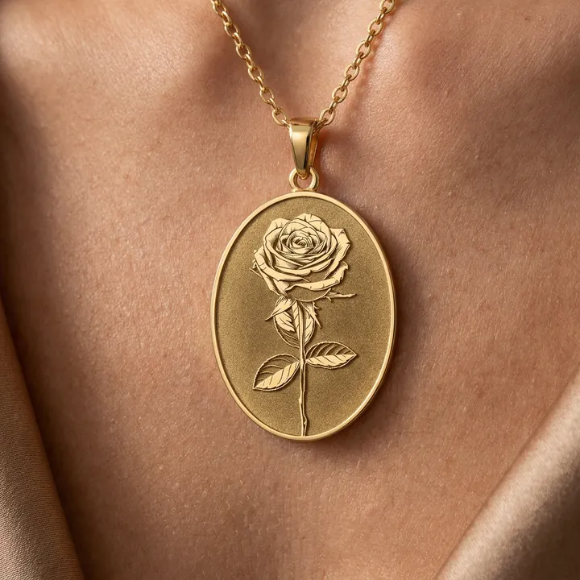
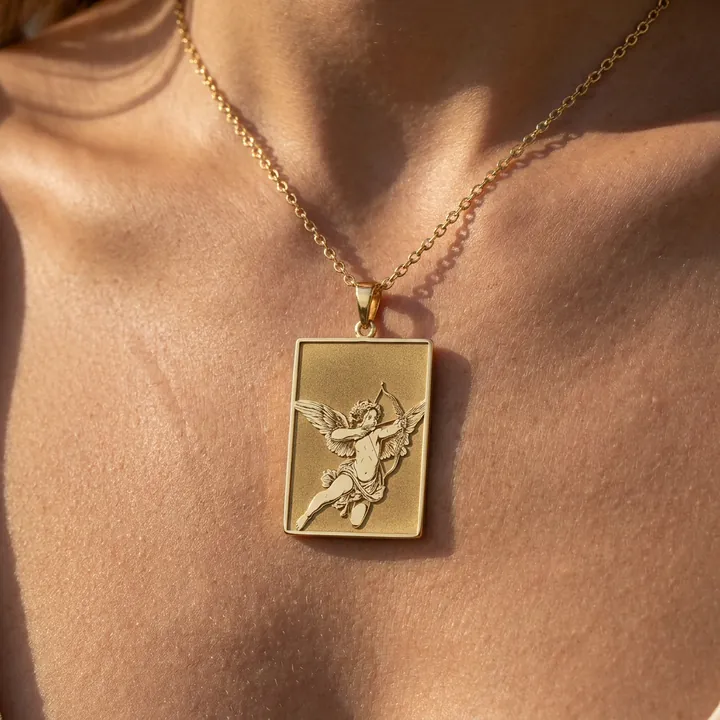

Sipariş
Atelify üretir.
Beğendiğin tasarımı kolye, yüzük ya da zincir olarak sipariş verirsin. Metal, ölçü ve adedi seçersin; sipariş atölyeye iletilir.
Atelify'dan başlaNasıl çalışır
Atelify, yüklediğin görseli kazımaya hazır bir çizime, sonra gerçek bir yüzük ya da kolyeye dönüştürür. Satışa hazır mockup ve manken görsellerini de aynı akışta üretirsin.




Taslak 1 kredi, ürün görseli ücretsiz, mockup ve manken 5–6 kredi.
Portre, logo, mimari ya da evcil hayvan fotoğrafı yeterli. Yapay zekâ konuyu korur ve kazımaya hazır bir gravür çizimi çıkarır; detaylı ya da minimalist stil seçebilirsin.

Çizim gerçek yüzük ve kolye kalıplarına oturur. Metal, şekil ve yüzeyi seçersin. Bu adım yapay zekâ kullanmaz; sonuç anında ve ücretsizdir.

Ürünün stüdyo ışığında, beyaz zeminde ya da sahneli fotoğrafı hazırlanır. Etsy, Instagram veya katalog için uygun çıktı alırsın.

Kolyenin boyunda, yüzüğün elde nasıl durduğunu görürsün. Müşterine ürünü gerçek kullanımda gösteren görsel hazır olur.

Tasarımını ürettirebilir ya da görsellerini kendi mağazanda kullanabilirsin.

Sipariş
Beğendiğin tasarımı kolye, yüzük ya da zincir olarak sipariş verirsin. Metal, ölçü ve adedi seçersin; sipariş atölyeye iletilir.
Atelify'dan başla
Satış görselleri
Mockup ve manken görsellerini tek tek ya da toplu olarak indirir; mağazanda, sosyal medyada veya kataloğunda kullanırsın.
Paketlere bak